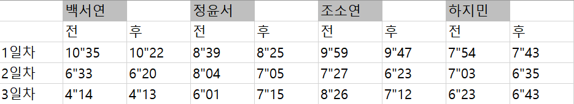

카페인 실험

[카페인 실험 동기]
현대 사회에서 많은 사람들이 시험 기간이나 과제를 할 때에 많은 카페인 음료를 섭취한다.
그러나 실제로는 카페인이 과제 효율을 증가시켜 주는지 증명된 과학적 사실이 없다.
따라서 실제로 카페인이 과제 효율에 영향을 미치는지 궁금증이 생겨서 직접 피실험자가 되어 카페인이 과제 효율에 미치는 영향에 대해 실험하게 되었다.
[카페인 실험 과정]
* 피검사자가 되어 실험할 일수를 3일로 정하고 날마다 다른 양을 마시도록 하였다.
1. 아침에 카페인을 마시기 전 스도쿠 게임을 하여 걸리는 시간을 측정한다.
2. 카페인을 첫날에는 마시지 않고, 둘째날에는 커피 전체 양의 반을 마시고, 마지막날에는 전체 양을 모두 마신다.
3. 카페인 섭취 후 4시간 뒤에 스도쿠 게임을 한 번 더 하여 시간을 측정한다.
4. 게임을 하는 데에 걸리는 시간을 카페인 섭취 전과 후로 나누어 비교해본다.
[카페인 실험 보고서]
[백서연]
우리는 ‘카페인을 먹기 전과 후의 각 상황에서의 뇌의 효율‘에 대하여 실험을 하였습니다.
실험 순서는
1. 카페인을 먹기 전 스도쿠 하기
2. 카페인(커피)를 반 마시고 30분 후 스도쿠 하기
3. 카페인(커피)를 다 마시고 30분 후 스도쿠 하기
입니다.
카페인을 먹기 전,
쉬움 난이도의 스도쿠를 푸는데 10:35초가 걸렸습니다.
카페인을 반 마시고 난 후,
쉬움 난이도의 스도쿠를 푸는데 4:14초가 걸렸습니다.
카페인을 다 마시고 난 후,
쉬움 난이도의 스도쿠를 푸는데 4:13초가 걸렸습니다.
결과:
카페인을 먹고 나서 뇌의 효율은 향상되었습니다.
[정윤서]
실험 첫번째 날에는 카페인 음료를 마시지 않고 스도쿠 게임을 진행하였다.
아침에는 스도쿠를 완성하는 데까지 8분 39초가 걸렸고 4시간 후 측정했을 때에는 8분 25초의 시간이 걸렸다. 걸리는 시간을 비교해 보았을 때 14초 정도의 차이로 큰 변화는 없었다.
두번째 날에는 카페인 음료의 절반을 마시기 전과 후의 걸리는 시간을 측정하였다. 카페인 음료를 마시기 전에는 8분 4초, 마신 후에는 7분 5초로 약 1분의 시간이 줄어든 것을 확인하였다.
세번째 날에는 카페인 음료 전체를 마시기 전과 후의 걸리는 시간을 측정하였다. 마시기 전에는 6분 1초, 마신 후에는 7분 15초로 마신 후의 기록이 1분 이상 더 늘어났음을 확인하였다. 카페인을 많이 섭취할수록 과제 해결 능력이 좋아질 것이라고 예측하였는데 오히려 카페인 음료를 모두 마셨을 때 효율이 더 떨어지는 결과가 도출되었다.
이 실험을 통해 카페인 섭취가 과제 효율을 증가시키는 데에 어느 정도까지만 영향을 미친다는 사실을 몸으로 직접 확인할 수 있었다. 또 나에게 맞는 카페인 섭취량을 알게 되어 과제 효율을 늘리는 데 사용할 수 있게 되었다. 함께 실험을 진행한 친구들의 기록과도 비교해보면서 사람마다 과제 효율을 늘리기 위해 필요한 카페인의 섭취량이 다르다는 것 또한 새롭게 알게 되었다.
[조소연]
3일 동안 스도쿠를 사용하여 카페인이 과제 효율에 미치는 영향에 대하여 직접 피실험자가 되어 실험을 진행하였다. 첫 번째 날은 카페인 음료를 섭취하지 않고 진행하였는데 00:12의 차이로 나중에 측정한 것이 시간이 적게 소요되었지만, 큰 차이는 발견하지 못했다. 두 번째 날은 카페안 음료를 절반만 섭취하고 진행하였는데 01:04의 차이로 섭취 후가 시간이 적게 소요되었다. 세 번째 날은 카페인 음료 전체를 마시고 진행하였는데 01:14의 차이로 섭취 후가 시간이 적게 소요되었다. 첫 번째와 두 번째를 비교해 보았을 때 카페인을 섭취하는 것이 과제를 해결하는데 시간이 적게 걸린다는 것에서, 카페인을 섭취하는 것은 섭취하지 않는 것보다 과제 효율을 늘리는 데 도움을 준다는 것을 확인하였다.. 또한, 카페인 음료의 양에 대한 결과는 두 번째와 세 번째에서 큰 차이가 없는 걸로 보아 많이 섭취할수록 효율이 오르는 것은 아니라는 것도 확인하였다. 즉, 카페인으로 효율을 올리고자 한다면 카페인을 적정량 섭취하는 것이 가장 이상적이라는 결론을 도출하였다.
[하지민]
3일을 정하여 날마다 카페인 섭취량을 다르게 한 후 스도쿠를 풀어봄으로써 카페인이 우리의 과제 효율에 미치는 영향을 알아보았다.
첫째 날에는 카페인의 섭취 없이 시간 차이만을 두고 스도쿠를 해보았는데, 아침에는 스도쿠를 풀어내는 데에 7분 54초가 걸렸고, 오후에는 7분 43초가 걸렸다. 둘 사이의 시간 차이를 보았을때 오전과 오후에 11초의 차이가 있었다.
둘째 날에는 카페인의 섭취량을 전체음료의 절반으로 정하여 스도쿠를 하였다. 오전에는 7분 3초, 오후에는 6분 35초로 둘 사이에 28초의 차이가 있음을 확인하였다.
마지막 날에는 카페인의 섭취량을 음료전체로 정하여 오전에는 6분 23초, 오후에는 6분 43초만에 스도쿠를 완성하였다. 이 둘 사이의 차는 +20초로, 전체 음료의 절반을 마시고 스도쿠를 했을 때보다 전체 음료를 마시고 스도쿠를 했을 때 효율이 더 떨어진다는 결과를 도출하게 되었다.
실험을 진행한 다른 친구들과의 측정시간도 비교해보며 어느정도의 양이 각 개인에게 가장 효율이 있는 지에 대해 알 수 있었다. 또한 실험 전까지만 해도 나에겐 카페인의 효과가 없다고 생각하였는데, 이 실험의 표를 통해 효율이 있다는 것이 확인되어 카페인의 효과를 직접 체험할 수 있었다.